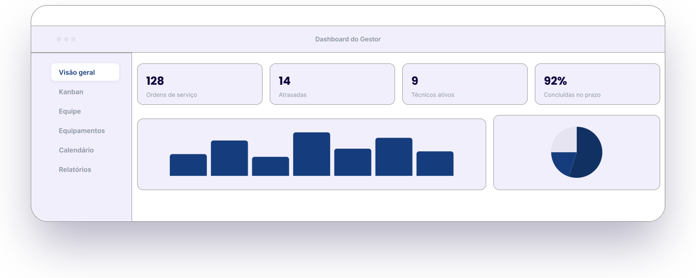
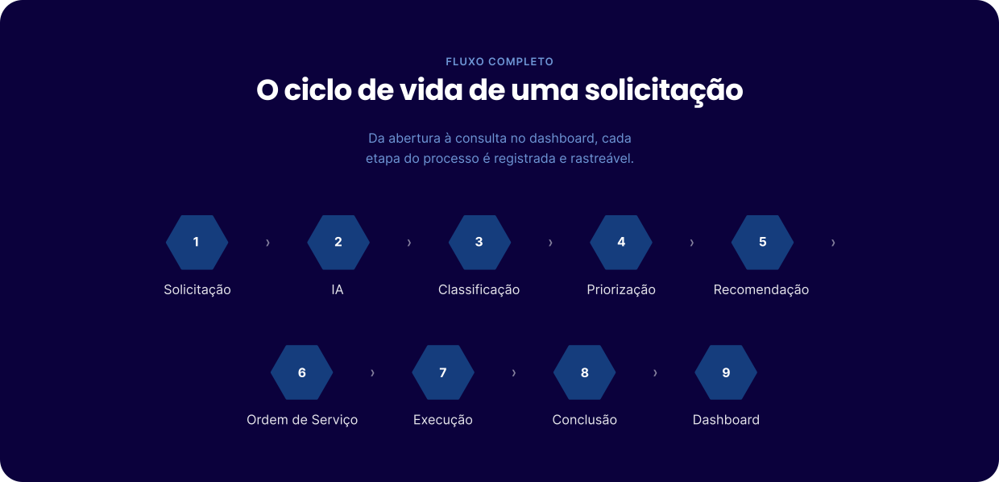
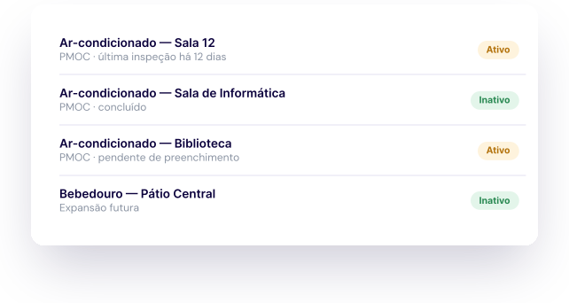

COMO FUNCIONA
Um fluxo estruturado da
solicitação ao dashboard
de gestão
Conheça em detalhe como o Fixa conecta solicitantes, técnicos e
gestores em um único sistema, com classificação por IA em cada etapa.


PERFIS DE ACESSO
Cada perfil vê exatamente o que
precisa
Funcionalidades específicas para solicitante, técnico e gestor — sem excesso de
informação.

Solicitante
— Abre novos problemas
— Cancela solicitação sem técnico atribuído
— Acompanha status das ordens de serviço
— Interage com o chatbot Manu
— Recebe atualizações em tempo real

Técnico de Manutenção
— Visualiza e organiza seu Kanban
— Recebe classificação e prioridade via IA
— Filtra por data, prioridade e categoria
— Registra conclusão com evidência fotográfica
— Preenche checklists PMOC

Gestor de Manutenção
— Cadastra técnicos e equipamentos
— Valida demandas antes da execução
— Mapeia horários e calendário completo
— Acessa dashboard consolidado da equipe
— Gera relatórios de inspeção
INTELIGÊNCIA ARTIFICIAL
A IA que organiza a operação
Da leitura da solicitação até a recomendação do técnico ideal.
Classificação
Categoriza automaticamente cada solicitação assim que ela é registrada.
Priorização
Define urgência com base em impacto nas aulas, risco e recorrência do problema.
Recomendação
Sugere o técnico ideal por categoria, experiência, disponibilidade e turno.
Chatbot Manu
Canal de comunicação do solicitante com o sistema, com atualizações em tempo real.
GESTÃO DE EQUIPAMENTOS
Histórico e checklists em um só
lugar
Equipamentos cadastrados
Escopo inicial em ar-condicionados, com expansão futura para bebedouros, escadas rolantes e iluminação.
Checklists PMOC
Modelos de inspeção com identificador único, disponíveis para preenchimento pelo técnico.
Exportação para auditoria
Checklists exportáveis em planilha para fins de conformidade legal.
Histórico completo
Toda tarefa concluída permanece disponível para consulta histórica por equipamento.
